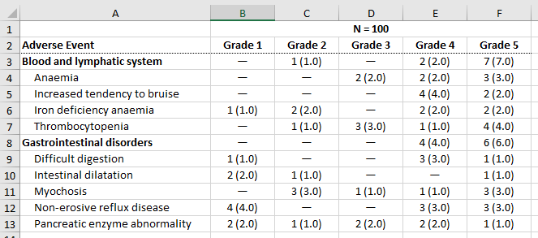

Overview
As {gtreg} is built upon {gtsummary}, you can use the same methods you would use for {gtsummary} to output tables to various formats. A {gtreg} table can be exported with {gt}, {flextable}, {huxtable}, {kableExtra}, knitr::kable(), and as a tibble. See the print engines available in {gtsummary} for details.
Here, we share approaches to common requests and recommendations for each output type.
Example table
table1 <-
df_adverse_events %>%
tbl_ae(
id = patient_id,
id_df = df_patient_characteristics,
ae = adverse_event,
soc = system_organ_class,
by = grade
) %>%
modify_header(
all_ae_cols() ~ "**Grade {by}**"
) %>%
bold_labels()Example outputs
HTML
The default output type is HTML.
table1| Adverse Event | N = 100 | ||||
|---|---|---|---|---|---|
| Grade 1 | Grade 2 | Grade 3 | Grade 4 | Grade 5 | |
| Blood and lymphatic system disorders | — | 1 (1.0) | — | 2 (2.0) | 7 (7.0) |
| Anaemia | — | — | 2 (2.0) | 2 (2.0) | 3 (3.0) |
| Increased tendency to bruise | — | — | — | 4 (4.0) | 2 (2.0) |
| Iron deficiency anaemia | 1 (1.0) | 2 (2.0) | — | 2 (2.0) | 2 (2.0) |
| Thrombocytopenia | — | 1 (1.0) | 3 (3.0) | 1 (1.0) | 4 (4.0) |
| Gastrointestinal disorders | — | — | — | 4 (4.0) | 6 (6.0) |
| Difficult digestion | 1 (1.0) | — | — | 3 (3.0) | 1 (1.0) |
| Intestinal dilatation | 2 (2.0) | 1 (1.0) | — | — | 1 (1.0) |
| Myochosis | — | 3 (3.0) | 1 (1.0) | 1 (1.0) | 3 (3.0) |
| Non-erosive reflux disease | 4 (4.0) | — | — | 3 (3.0) | 3 (3.0) |
| Pancreatic enzyme abnormality | 2 (2.0) | 1 (1.0) | 2 (2.0) | 2 (2.0) | 1 (1.0) |
Word
Leverage the {flextable} package for word output.
table1 %>%
as_flex_table() %>%
flextable::save_as_docx(path = "misc/ae_table.docx")
Excel
Leverage the {huxtable} package for excel output.
table1 %>%
as_hux_xlsx(
file = "misc/ae_table.xlsx"
)
Leverage the {kableExtra} package for styled PDF output.
To export to PDF, create a new .Rmd or .qmd document with a PDF output type. The YAML shown here is for .Rmd. You can then use as_kable_extra() to convert the table to the LaTeX required for pdf rendering, and kable_styling() for extra styling of the table. For more pdf styling options, see the blog post Report Ready PDF tables with rmarkdown, knitr, kableExtra, and LaTeX.
---
output: pdf_document
---
<stuff>
```{r}
table1 %>%
as_kable_extra(
booktabs = TRUE
) %>%
kableExtra::kable_styling(
latex_options = "striped",
stripe_color = "gray!15"
)
```